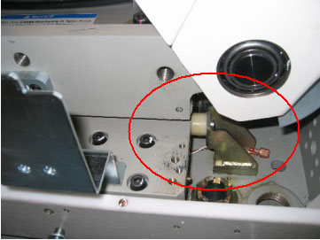

(For GT1700 and GT2000 Table) Skip this step.
(For Global PET/CT Table and Global PET/CT table, with fixed postion IMS) Release Transporter and manually push up against the rear Hard Stop.
Illustration 3: Table Pushed Against Hard Stop (Global PET/CT Table)
